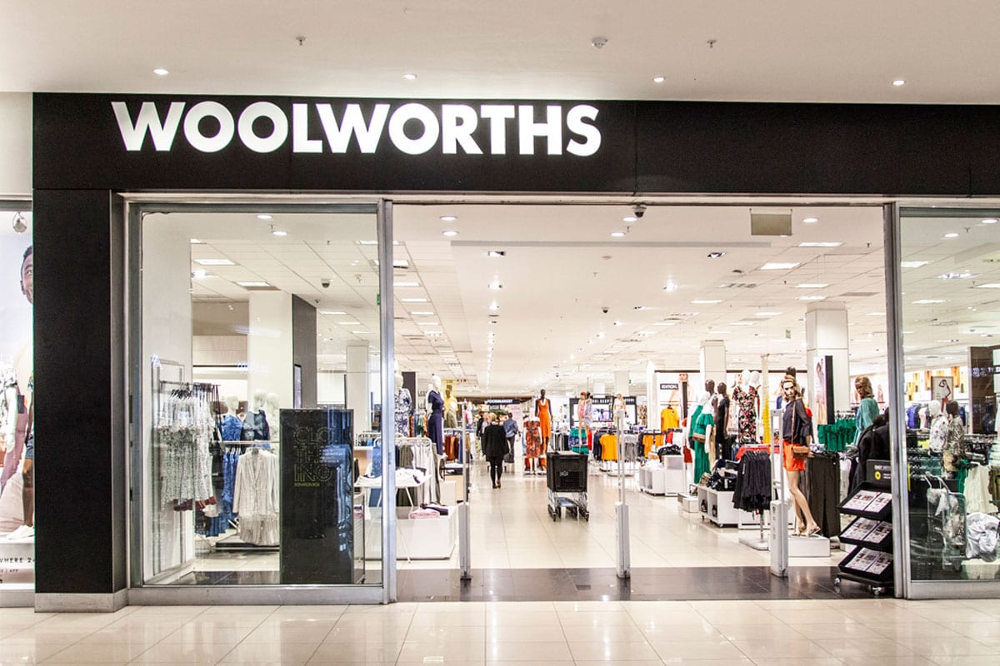

WOOLWORTHS
The first Woolworths store opened its doors to the public in Cape Town, South Africa, in 1931. ... In 1997, WHL acquired a controlling interest in Country Road Group, with the remaining shares acquired in 2014. The Country Road brand was founded in 1974 as a manufacturer and supplier of women's casual cotton shirts.The South African Woolworths business consists of full-line fashion, home and beauty stores, many of which incorporate a premium food retail
WHERE WILL YOU FIND THE STORE
You will find the store on the first floor - near the entrance.